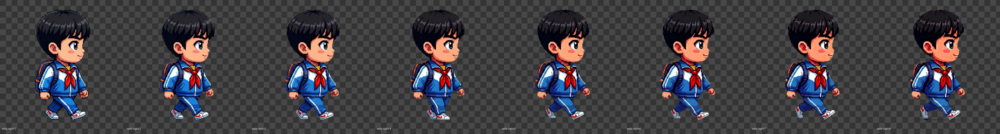
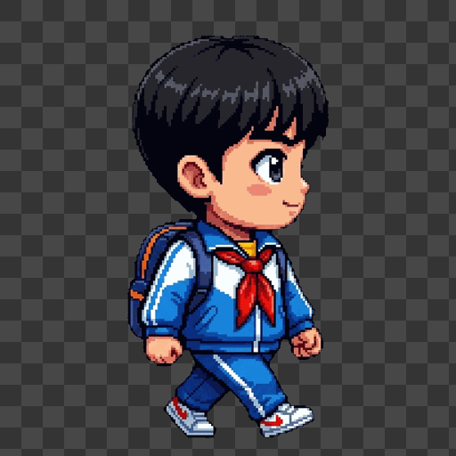

RPG Animation Skill Test - PASS
Output follows the rpg-asset-gen animation flow: single-frame candidates, mirrored side direction, anchor normalization, GIF/strip QA.
Cycle: smooth8 (8 frames).
Report: qa/report.json
Human review: reject_for_final
Structural anchors are stable, but the 8-frame Gemini-only sequence is still not visually smooth enough: leg motion is too subtle in early frames and later frames show unnatural or lost lower-body details.
Use Gemini to create a small set of strong keyframes, then make deterministic in-between frames or manually select/repair frames before final promotion.
Structural anchors are stable, but the 8-frame Gemini-only sequence is still not visually smooth enough: leg motion is too subtle in early frames and later frames show unnatural or lost lower-body details.
Use Gemini to create a small set of strong keyframes, then make deterministic in-between frames or manually select/repair frames before final promotion.
walk-right PASS


Structural QA: PASS. Human continuity review is still required.